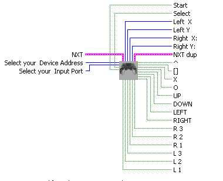
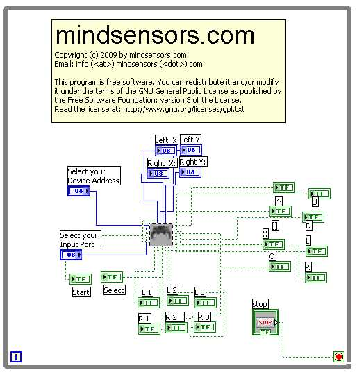

This block communicates with a PS2 controller using PSP-Nx interface
sensor. It returns the four joystick positions, as well as the state of
the 16 buttons on the PS2 controller (pressed or unpressed).

Inputs
Select your Input Port
-
This is where you input the
Input
Port your PSP-Nx is
attached to.
Select your Device Address
-
This is where you input the address of
your PSP-Nx , the factory default is 2.
Outputs
Left X & Y abd Right X & Y are the values of the joysticks.
The rest are the individual button values if the button is pressed it
will be true if not it will be false.
Sample Program

Sample located at
C:\Documents and Settings\User
Name\My Documents\LabVIEW Data\mindsesnors.com
LVHS\mindsensors.com Sample Programs\PSP-Nx-SP\PSP-Nx-Direct
Discuss Your Ideas>>